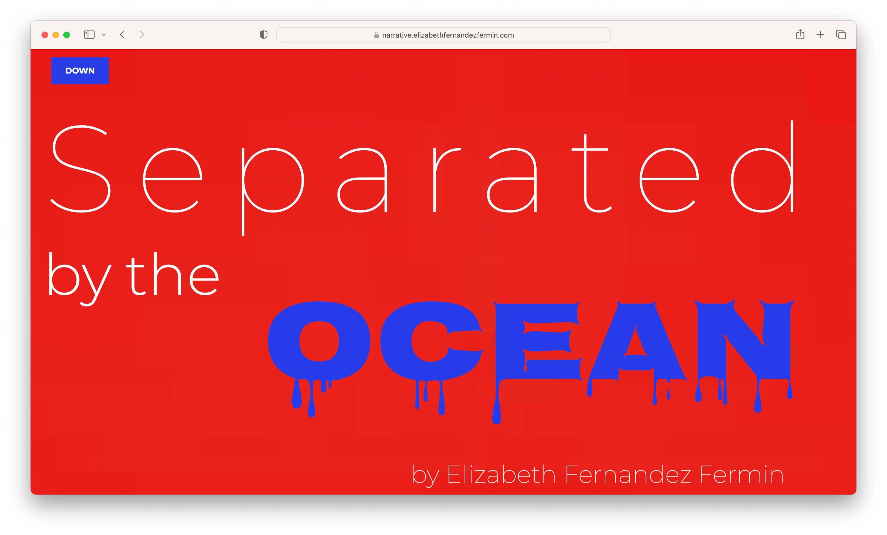
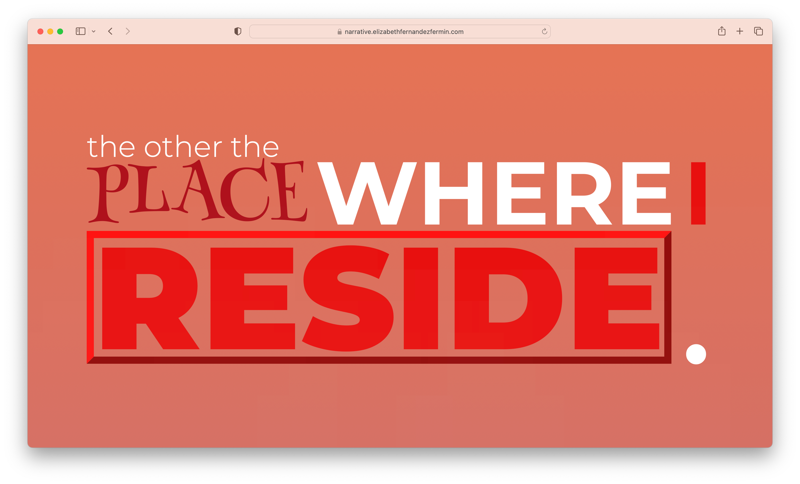

Separated by an Ocean
Digital Design
Web Design II | Spring 2021
Crafted an exquisite website, developed from scratch using HTML, CSS, and jQuery, that powerfully captures the emotional journey of what being an immigrant is like, through a compelling poem. Intentionally incorporating the colors of the Dominican Republic's flag, the website creates a visual narrative, while typographic elements also guide the viewer through the immersive experience. Animations, coded with jQuery, further enhance the storytelling, leaving a lasting impression of the profound sense of what is like to feel separated yet continue to be resilient.

